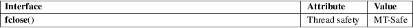

fclose − close a stream
Standard C library (libc, −lc)
#include <stdio.h>
int fclose(FILE *stream);
The fclose() function flushes the stream pointed to by stream (writing any buffered output data using fflush(3)) and closes the underlying file descriptor.
Upon successful completion, 0 is returned. Otherwise, EOF is returned and errno is set to indicate the error. In either case, any further access (including another call to fclose()) to the stream results in undefined behavior.
|
EBADF |
The file descriptor underlying stream is not valid. |
The fclose() function may also fail and set errno for any of the errors specified for the routines close(2), write(2), or fflush(3).
For an explanation of the terms used in this section, see attributes(7).

C11, POSIX.1-2008.
C89, POSIX.1-2001.
Note that fclose() flushes only the user-space buffers provided by the C library. To ensure that the data is physically stored on disk the kernel buffers must be flushed too, for example, with sync(2) or fsync(2).
close(2), fcloseall(3), fflush(3), fileno(3), fopen(3), setbuf(3)